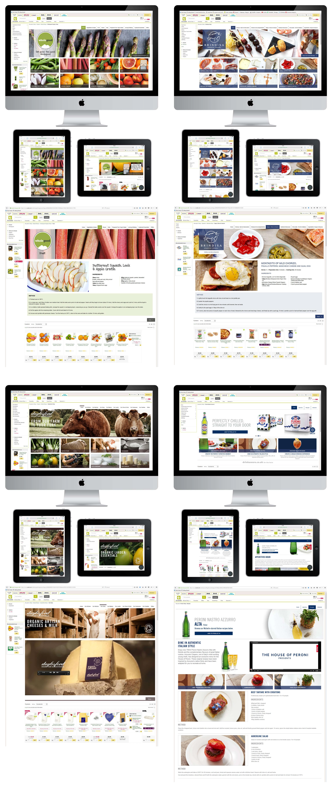

Featured Case Study
Ocado Brandshops
Microsite design and front-end development for supplier brand shops within Ocado’s e-commerce platform.

Description:
The Ocado Brand Shops are responsive microsites within the main Ocado website, created for a wide range of partner suppliers — including Brindisa, Daylesford, Peroni, and Wholegood, among others. These dedicated spaces help customers easily discover and navigate to each supplier’s products sold through the Ocado platform.
At the time I was employed, the brand shops showcased their story, heritage, and values, strengthening customer connection and trust. Many also featured recipe sections, offering inspiration on how to cook with the featured products and encouraging deeper engagement with the brand.
Each shop follows both Ocado’s internal brand shop guidelines and the supplier’s visual identity, balancing consistency across the platform with distinctive storytelling for every brand.
My Role:
I was responsible for taking each brand shop from initial brief through to launch, overseeing the full creative and technical process — from concept and layout design to front-end development, testing, and publication.
I collaborated closely with a project manager who liaised directly with suppliers to coordinate assets, feedback, and approvals. Internally, I worked with my team leader and head of creative, presenting progress, gathering design feedback, and obtaining final sign-off before publishing the shops live on the Ocado site. Together, we ensured each microsite aligned with Ocado’s standards while meeting each supplier’s marketing goals.
Contribution:
- Design: Created responsive mockups in Adobe Fireworks and prepared optimized assets for web.
- Front-End Development: Hand-coded the pages using HTML and CSS3 within Ocado’s in-house CMS. Developed advanced HTML/CSS-only solutions for interactivity and animation due to JavaScript restrictions.
- Interactivity & Responsiveness: Built features such as carousels, drop-down menus, and accordion sections entirely with HTML and CSS, ensuring seamless performance across devices and browsers — including Internet Explorer 6.
- Collaboration: Worked closely with project managers, creative leads, and developers to maintain high design standards, consistency, and efficiency across all brand shops.
Achievements:
Through these projects, I strengthened the presence of multiple supplier brands within Ocado’s e-commerce platform, delivering microsites that were visually polished, technically robust, and engaging to customers.
Working within strict technical limits taught me to think creatively and build interactive, responsive experiences without JavaScript, sharpening my front-end problem-solving skills. I also learned the value of close collaboration — working alongside project managers, creative leads, and developers to maintain high design standards, consistency, and efficiency throughout production.
The resulting brand shops — including those for Brindisa, Daylesford, Peroni, Wholegood, and many others — helped customers connect with brands in a more meaningful way while exploring their products on Ocado.